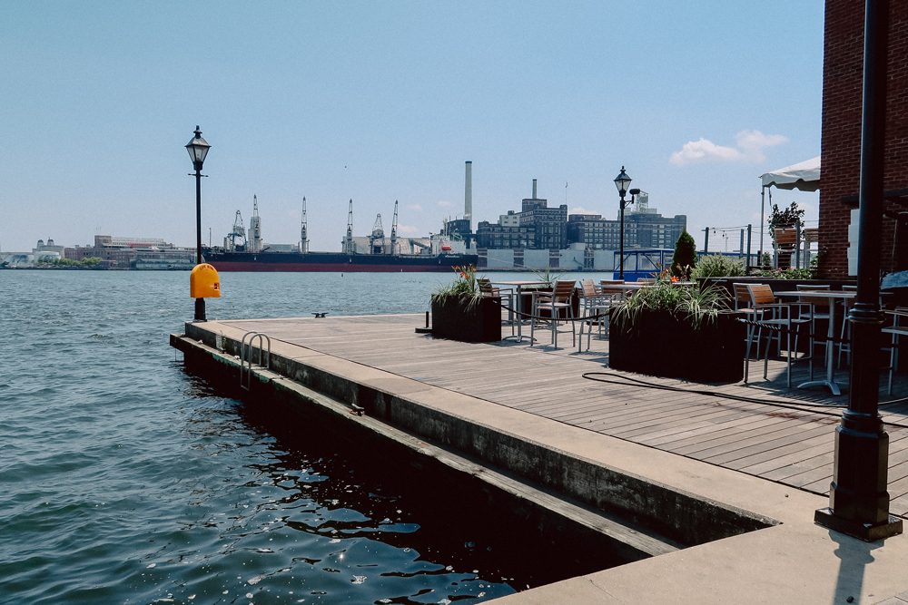
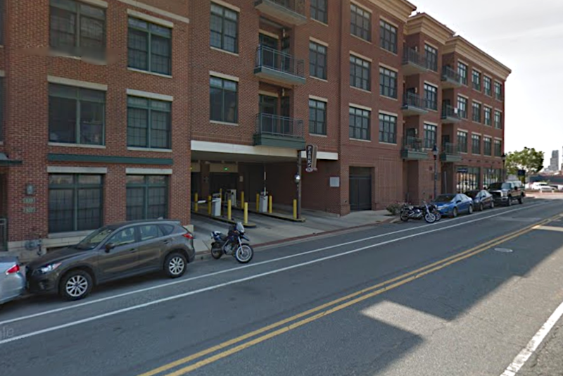

Things to Note
COVID-19 Update
With COVID-19 unexpectedly hitting 2020, we decided to adjust our wedding plans and have our wedding in Baltimore. A Harbor wedding was not our original plan at all, but it was important for us to be married on our 5 year anniversary, so we're making it work!
We're taking several precautions since we're having our wedding during a pandemic. Our ceremony and reception will be entirely outdoors, we'll have a max of 25 people in our space, and we're kindly asking that our guests wear masks while they're not eating or drinking. If someone were to get sick from attending our wedding, we'd have a hard time forgiving ourselves, so it's better to play it safe.
Face Masks
Out of respect to all of our guests and the restaurant staff, we're kindly asking that everyone wear face masks throughout the entire night, unless they're eating or drinking. We'll be providing both masks and hand sanitizer for all of our guests, so you can feel comfortable and sanitize at any point during the night.
We're keeping it intimate.
Family is super important to both of us, and we have a whole lot of it. For our wedding, we've decided to keep things small with immediate family and close friends only.
That being said, we would love to include and celebrate with the rest of our family in other ways after our wedding weekend when the pandemic is over.
RSVP
How do I RSVP?
You can RSVP online here.
Can I bring someone not listed on the invite?
We will only be able to accommodate those formally listed on your invitation.
What should I do if I can’t make it?
You'll be missed! If you can't make it to the wedding, please let us know as soon as possible and RSVP “no” so we can plan accordingly.
When is the RSVP deadline?
Please RSVP by September 23, 2020 at the latest.
Ceremony
Where is the wedding?
The wedding ceremony will take place at a restaurant in Fells Point called Ampersea, at 1417 Thames Street, Baltimore, Maryland. After the ceremony, Ampersea will reconfigure the space for the reception.

Will the ceremony be outdoors?
Yes! Rain or shine, we'll be outdoors. If it rains, we'll have a tent for coverage.
Where should I park?
Although there is a parking lot located right next to the restaurant, it is only available for monthly parkers during the week until after 5:00 PM. You can park at the 1530 Thames Street garage and Ampersea is less than a 5 minute walk from there.

Is there a dress code?
The dress code for our wedding is 'casual dress' attire. Ladies should take the wind into consideration if picking out a dress for the ceremony. Gentlemen can wear a suit and tie or khakis and a blazer.
We'd like everyone to look fairly unified and ask that you stick to our earthy color palette of navy, blue, green, and/or neutral colors (tan/brown, black/gray, white).
What will the weather be like in October?
Based on the weather in October 2019, the temperature should be around 55-65 degrees in the evening the week of the wedding.
+ More details to come